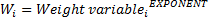
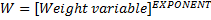
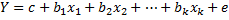
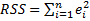
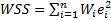
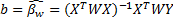

Weighted Least Squares Regression
Weighted Least Squares Regression (WLS) regression is an extension of the ordinary least squares (OLS) regression that weights each observation unequally. The additional scale factor (weight), included in the fitting process, improves the fit and allows handling cases with data of varying quality. The weighted least squares regression is often used when heteroskedasticity (non-constant error variance) is present in an analysis – with the correct weight, inefficient estimates and biased standard errors can be limited. Weighted least squares regression is a special case of generalized least squares (GLS) regression when all the non-diagonal elements of the residuals correlation matrix are equal to zero. Also simply referred as weighted regression.
How To
Run: Statistics→Regression → Weighted Least Squares Regression...
Select Dependent (Response) variable and Independent variables (Predictors).
Select the Weight Variable with positive values. The weight given to the ith observation is determined as:

If the weight variable is identically equal to 1, the command is identical to the Linear Regression command (OLS regression).
Default value of the Exponent is 1. It can be changed using the Advanced Options panel.
Use the Constant (Intercept) is Zero option to force the regression line to pass through the origin.
Optionally, add plots to the report:
o Plot Residuals vs. Fitted option adds the residuals versus predicted values plot.
o Plot Residuals vs. Order option adds the residuals versus order of observation plot.
Casewise deletion method is used for missing values removal.
Results
The first block
of the report shows how the weight for the observations is calculated: 
Please see the Linear Regression chapter for more details on regression statistics, analysis of variance table, coefficients table and residuals report.
Model
The
regression equation    
The WLS model can be used efficiently for datasets with a small number of observations and varying quality, but the assumption of a known weight estimates is often not valid in practice. Also like the other least squares methods, the WLS regression has high sensitivity to outliers.
References
Carroll, R.J., Ruppert, D. (1988). Transformation and Weighting in Regression. London: Chapman and Hall.
Galton, F. (1889). Natural Inheritance, London: Macmillan.
Han, H., Ma, Y., Zhu, W. (2015). Galton’s Family Heights Data Revisited, arXiv:1508.02942 [stat.AP].
Montgomery, D., Peck, E. and Vining, G. (2012). Introduction to Linear Regression Analysis, 5th edn. Hoboken, New York: John Wiley & Sons.
NIST/SEMATECH e-Handbook of Statistical Methods, http://www.itl.nist.gov/div898/handbook, 2012.
Ryan, T.P. (1997). Modern Regression Methods, New York: Wiley.
Weisberg, S. (2005). Applied Linear Regression, 3rd edn. Hoboken, NJ: John Wiley & Sons.